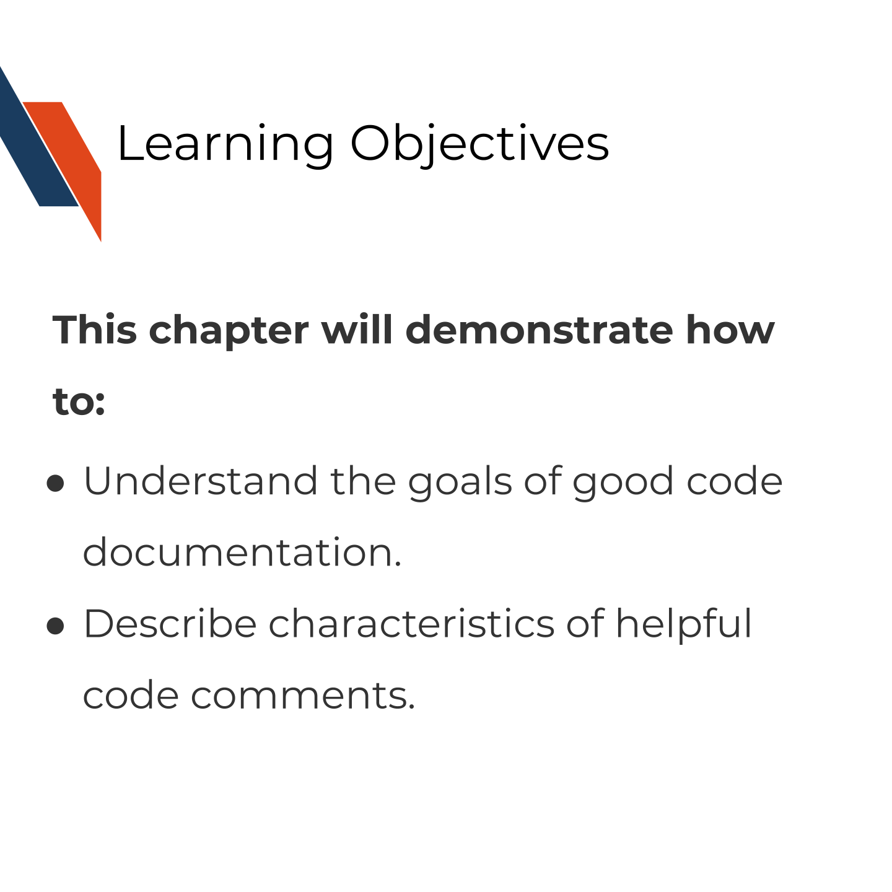
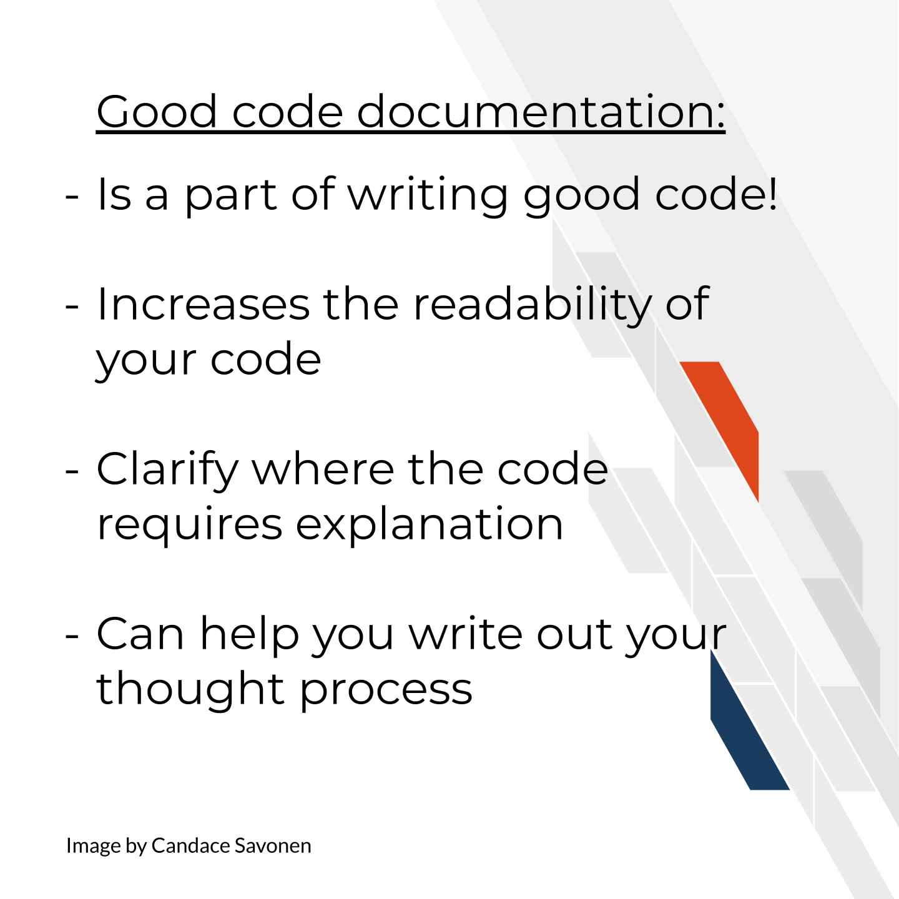

Chapter 8 Creating clarifying code comments

8.1 The goal of a code documentation
Code documentation goes beyond your user. It’s a part of writing good code and helps your collaborators and future you!
Most users will probably not look at your code directly – those who do are probably:
- Quite desperately troubleshooting something and were not able to find answers elsewhere.
- Are “power users” who are already pretty invested in your tool and want to get more out of it – may be helpful contributors too!
Good code comments are a part of writing good, readable code! Your code is more likely to stand the test of time for longer if others, including yourself in the future, can help you maintain it and want to use it because they can see what’s happening enough to trust it themselves!
Current You who is writing your code may know what is happening but Future You will have no idea what Current You was thinking (Spielman, n.d.):
Future You comes into existence about one second after you write code, and has no idea what on earth Past You was thinking. Help out Future You by adding lots of comments! Future You next week thinks Today You is an idiot, and the only way you can convince Future You that Today You is reasonably competent is by adding comments in your code explaining why Today You is actually not so bad.
Your code and your understanding of it will fade soon after you write it, leaving your hard work to deprecate. Code that works is a start, but readable AND working code is best!
Comments can help clarify at points where your code might need further explanation but the act of writing them can also help you think out your thought process and perhaps identify a better solution to the odd parts of your code.
8.2 Characteristics of clarifying code comments
What kinds of comments are most helpful for Future You and others?
Spertus (n.d.) lays out “Rules” for writing helpful code comments in this article which we recommend you read.
Rule 1: Comments should not duplicate the code.
Rule 2: Good comments do not excuse unclear code.
Rule 3: If you can’t write a clear comment, there may be a problem with the code.
Rule 4: Comments should dispel confusion, not cause it.
Rule 5: Explain unidiomatic code in comments.
Rule 6: Provide links to the original source of copied code.
Rule 7: Include links to external references where they will be most helpful.
Rule 8: Add comments when fixing bugs.
Rule 9: Use comments to mark incomplete implementations.
Here is more reading about good code comments that have plenty of great discussions about how to up your code comment game.
- Best Practices for Writing Code Comments by Spertus (n.d.).
- What Makes a Good Code Comment? by Cronin (2019).
- The Value of Code Documentation by Meza (2018).
- Some internet wisdom on R documentation by Frazee (2014).
- How to Comment Your Code Like a Pro: Best Practices and Good Habits by Keeto (2019).
In summary:

8.3 Exercise: Evaluate your own code’s comments
Take a look through some of your tool’s code and its comments. Are there places it could be clearer? Take sometime to think about your coding process and how it could improve. Code review is also an excellent way to improve code clarity and quality (Bodner 2018)!